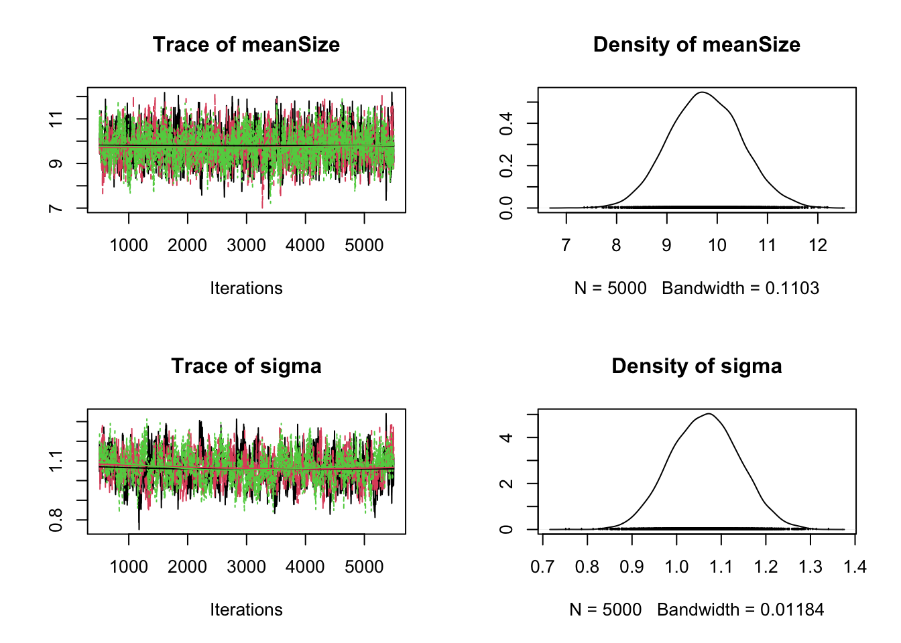

meanSize <- 10
trueLogSd <- 1
sampleSize <- 500
truevalues = rexp(rate = 1/meanSize, n = sampleSize)
observations = rlnorm(n = length(truevalues), mean = log(truevalues), sd = trueLogSd)9 Error in variable models
9.1 Example
9.2 Creation of the data
Assume we observe data from an ecological system that creates an exponential size distribution (e.g. tree sizes, see Taubert, F.; Hartig, F.; Dobner, H.-J. & Huth, A. (2013) On the Challenge of Fitting Tree Size Distributions in Ecology. PLoS ONE, 8, e58036-), but our measurments are performed with a substantial lognormal observation error
Plotting true and observed data
maxV <- ceiling(max(observations,truevalues))
counts <- rbind(
obs = hist(observations, breaks = 0:maxV, plot = F)$counts,
true = hist(truevalues, breaks = 0:maxV, plot = F)$counts
)
barplot(log(t(counts)+1), beside=T)9.3 Fitting a non-hierarchical model leads to bias
Model specification of a non-hierarchical model in JAGS that does not account for the observation error
normalModel = textConnection('
model {
# Priors
meanSize ~ dunif(1,100)
# Likelihood
for(i in 1:nObs){
true[i] ~ dexp(1/meanSize)
}
}
')
# Bundle data
positiveObservations <- observations[observations>0]
data = list(true = positiveObservations, nObs=length(positiveObservations))
# Parameters to be monitored (= to estimate)
params = c("meanSize")
jagsModel = jags.model( file= normalModel , data=data, n.chains = 3, n.adapt= 500)Compiling model graph
Resolving undeclared variables
Allocating nodes
Graph information:
Observed stochastic nodes: 500
Unobserved stochastic nodes: 1
Total graph size: 505
Initializing modelresults = coda.samples( jagsModel , variable.names=params,n.iter=5000)
plot(results)The main thing to note about this is that parameter estimates are heavily biased.
Note: textConnection avoids having to write the string to file (default option). If you need help on how to interpret these plots, see the material about interpreting MCMC output.
9.4 Fitting a hierarchical model removes the bias
Model specification if hierarchical model that accounts for the observation error in Jags
hierarchicalModel = textConnection('
model {
# Priors
meanSize ~ dunif(1,100)
sigma ~ dunif(0,20) # Precision 1/variance JAGS and BUGS use prec instead of sd
precision <- pow(sigma, -2)
# Likelihood
for(i in 1:nObs){
true[i] ~ dexp(1/meanSize)
observed[i] ~ dlnorm(log(true[i]), precision)
}
}
')
# Bundle data
data = list(observed = observations, nObs=length(observations))
# Parameters to be monitored (= to estimate)
params = c("meanSize", "sigma")
jagsModel = jags.model( file= hierarchicalModel , data=data, n.chains = 3, n.adapt= 500)Compiling model graph
Resolving undeclared variables
Allocating nodes
Graph information:
Observed stochastic nodes: 500
Unobserved stochastic nodes: 502
Total graph size: 1511
Initializing model#update(jagsModel, 2500) # updating without sampling
results = coda.samples( jagsModel , variable.names=params,n.iter=5000)
plot(results)
It’s allways good to check the correlation structure in the posterior
pairs(as.matrix(results))9.5 Regression dillution
library(EcoData)
library(rjags)
nobs = nrow(volcanoisland)
# imagine we had a very bad measurement devide for the altitude
volcanoisland$sAltitudeR = volcanoisland$sAltitude + rnorm(nobs)
plot(log(windObs) ~ sAltitude, data = volcanoisland)
fit = lm(log(windObs) ~ sAltitude, data = volcanoisland)
summary(fit)
Call:
lm(formula = log(windObs) ~ sAltitude, data = volcanoisland)
Residuals:
Min 1Q Median 3Q Max
-3.5295 -0.5738 0.0083 0.5897 2.3810
Coefficients:
Estimate Std. Error t value Pr(>|t|)
(Intercept) 1.74308 0.02687 64.87 <2e-16 ***
sAltitude 0.41156 0.02688 15.31 <2e-16 ***
---
Signif. codes: 0 '***' 0.001 '**' 0.01 '*' 0.05 '.' 0.1 ' ' 1
Residual standard error: 0.8498 on 998 degrees of freedom
Multiple R-squared: 0.1902, Adjusted R-squared: 0.1894
F-statistic: 234.3 on 1 and 998 DF, p-value: < 2.2e-16abline(fit, col = "red")
fit = lm(log(windObs) ~ sAltitudeR, data = volcanoisland)
summary(fit)
Call:
lm(formula = log(windObs) ~ sAltitudeR, data = volcanoisland)
Residuals:
Min 1Q Median 3Q Max
-3.8547 -0.5635 0.0334 0.5968 2.6949
Coefficients:
Estimate Std. Error t value Pr(>|t|)
(Intercept) 1.74029 0.02825 61.61 <2e-16 ***
sAltitudeR 0.21411 0.01977 10.83 <2e-16 ***
---
Signif. codes: 0 '***' 0.001 '**' 0.01 '*' 0.05 '.' 0.1 ' ' 1
Residual standard error: 0.8932 on 998 degrees of freedom
Multiple R-squared: 0.1051, Adjusted R-squared: 0.1042
F-statistic: 117.3 on 1 and 998 DF, p-value: < 2.2e-16abline(fit, col = "blue")
let’s see if we can correct the error
data = list(WindObs = log(volcanoisland$windObs),
Altitude = volcanoisland$sAltitudeR,
plot = as.numeric(volcanoisland$plot),
nobs = nobs,
nplots = length(unique(volcanoisland$plot)))
modelCode = "model{
# Likelihood
for(i in 1:nobs){
# error on y
WindObs[i] ~ dnorm(mu[i],tau)
# error on x
Altitude[i] ~ dnorm(TrueAltitude[plot[i]],tauMeasure)
mu[i] <- AltitudeEffect*TrueAltitude[plot[i]]+ Intercept
}
# Prior distributions
# For location parameters, normal choice is wide normal
AltitudeEffect ~ dnorm(0,0.0001)
Intercept ~ dnorm(0,0.0001)
for(i in 1:nplots){
TrueAltitude[i] ~ dnorm(0,0.0001)
}
# For scale parameters, normal choice is decaying
tau ~ dgamma(0.001, 0.001)
sigma <- 1/sqrt(tau)
tauMeasure ~ dgamma(0.001, 0.001)
sdMeasure <- 1/sqrt(tauMeasure)
}
"
jagsModel <- jags.model(file= textConnection(modelCode), data=data, n.chains = 3)Compiling model graph
Resolving undeclared variables
Allocating nodes
Graph information:
Observed stochastic nodes: 2000
Unobserved stochastic nodes: 104
Total graph size: 3314
Initializing modelpara.names <- c("AltitudeEffect","Intercept","sigma", "sdMeasure")
Samples <- coda.samples(jagsModel, variable.names = para.names, n.iter = 5000)
plot(Samples)
summary(Samples)
Iterations = 1:5000
Thinning interval = 1
Number of chains = 3
Sample size per chain = 5000
1. Empirical mean and standard deviation for each variable,
plus standard error of the mean:
Mean SD Naive SE Time-series SE
AltitudeEffect 0.4901 0.03125 0.0002551 0.0004373
Intercept 1.7364 0.02991 0.0002442 0.0003341
sdMeasure 1.0469 0.02630 0.0002147 0.0002715
sigma 0.7833 0.01977 0.0001614 0.0002100
2. Quantiles for each variable:
2.5% 25% 50% 75% 97.5%
AltitudeEffect 0.4308 0.4688 0.4897 0.5106 0.5529
Intercept 1.6775 1.7159 1.7365 1.7566 1.7948
sdMeasure 0.9975 1.0288 1.0465 1.0642 1.0999
sigma 0.7459 0.7696 0.7830 0.7965 0.8225